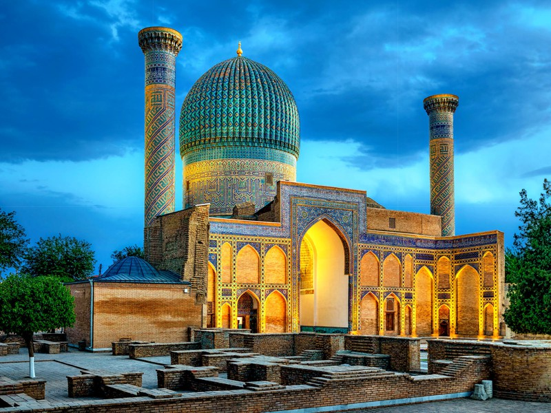

Мавзолей Гур-Эмир

Многие великие исторические памятники Самарканда связаны с именем выдающегося правителя и воина Тамерлана. И одна из главных достопримечательностей древнего города — это мавзолей Гур-Эмир («гробница повелителя», «могила Эмира»), где он и его потомки нашли последний приют. Великолепие этого грандиозного монументального здания поражает и даже где-то подавляет. Считается, что эта древняя усыпальница стала прототипом для таких чудес света, как мавзолей Тадж-Махал и Хумаюн. С мавзолеем Гур-Эмир, как и со многими другими древними зданиями Самарканда, связано множество жутковатых легенд и удивительных историй.
Строительство этого, наверное, самого грандиозного мавзолея всей Средней Азии началось в 1403 г. по велению могучего правителя Тамерлана. Масштабные работы начались в том месте, где некогда находился комплекс зданий 14-15 веков, построенные по велению внука Тимура Мухаммед-Султана. В ту давно минувшую пору в ансамбль входили медресе, минареты и ханака, где проживал царевич. Некоторые из этих строений, сквозь толщу лет, добрались и до наших дней. В частности, здесь можно увидеть часть одного из сохранившихся минаретов, портал центрального входа, руины медресе и ханаки. Здесь же, в склепе, похоронен и сам Мухаммед-Султан. Над склепом возвышается прекрасный купол, облицованный затейливой мозаикой, а низ стен выполнен из мрамора и покрыт золотом.